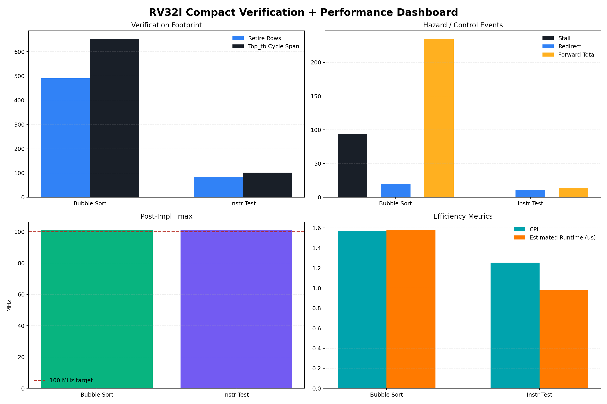

`test_top`과 `bubble_sort`만 남긴 compact 비교판입니다.
검증 footprint, hazard/control event, Fmax, CPI/runtime만 남겼습니다.

| Case | Result | Retire | Coverage | Stall | Redirect | Forward Total | MemWrite |
|---|---|---|---|---|---|---|---|
| 버블 정렬 | PASS | 490 | 81.36% | 94 | 20 | 235 | 42 |
| 전체 명령어 테스트 | PASS | 84 | 76.82% | 0 | 11 | 14 | 4 |
| Case | Perf Variant | Fmax (MHz) | Slack (ns) | CPI | Runtime (us) | LUTs | Regs |
|---|---|---|---|---|---|---|---|
| 버블 정렬 | bubble | 101.245 | 0.123 | 1.568627 | 1.580 | 1279 | 817 |
| 전체 명령어 테스트 | default | 101.266 | 0.125 | 1.253165 | 0.978 | 1841 | 1440 |
Note: `전체 명령어 테스트` 성능 행은 기존 perf flow의 `default` ROM variant를 비교 기준으로 사용했습니다.